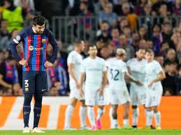

El Barça necesita un milagro en la Champions League para llegar a octavos. No hay más. El equipo de Xavi Hernández volvió a decepcionar en una noche donde se adelantó en una acción aislada de Raphinha que culminó Dembélé, tuvo todo de cara y se pegó un tiro en el pie. Sin control de la pelota, superado por los contragolpes del Inter de Milán, a merced en la transición defensiva y enloquecido en las acciones de ataque. Sin timón en el centro del campo ni dirección ni pizarra en la banda. Con las vacas sagradas, Gerard Piqué, Sergio Busquets y Sergi Roberto señalados en los goles italianos. El Camp Nou ya ha visto este partido muchas veces en las últimas temporadas. Es otro mazazo europeo de un club que contaba con luchar por todos los títulos y de una junta directiva que presupuestó llegar, como mínimo, a cuartos de final de la Champions League. Con solo cuatro puntos en cuatro jornadas, el 3-3 obliga al Barça a ganar al Bayern en casa, al Viktoria Plzen a domicilio y esperar a los acontecimientos
